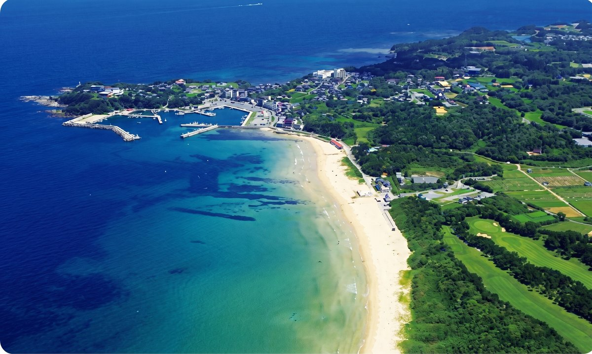
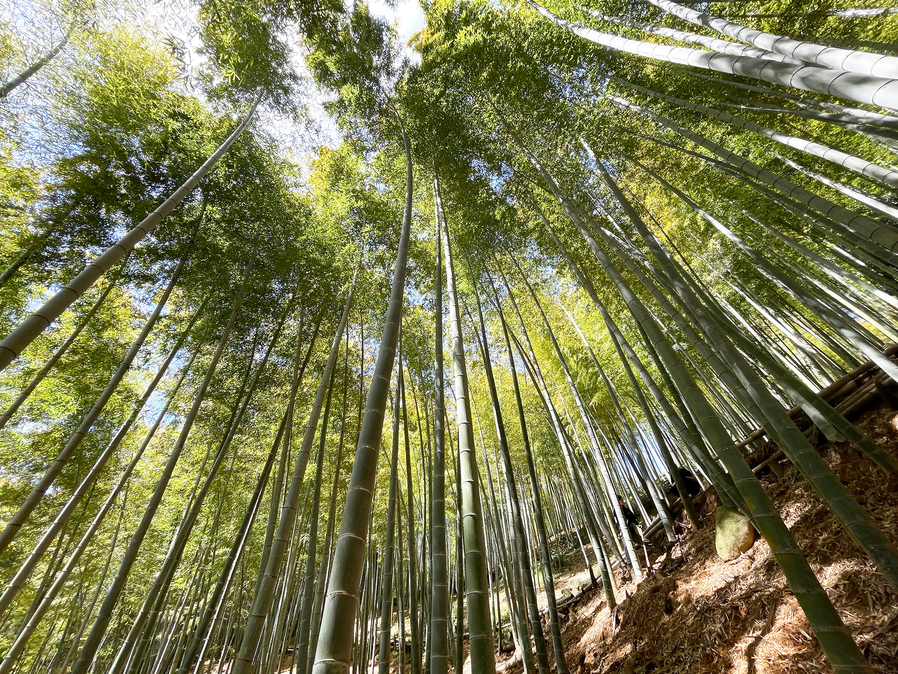
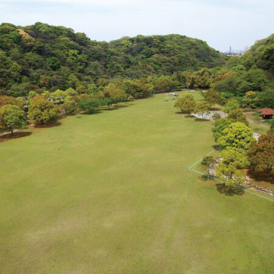

北九州市の自然スポット（アーバンネイチャー北九州）
北九州市には、都市部から近い距離に多彩な自然環境が広がっています。これらは市民に身近でありながら、国際的にも評価される貴重な自然資源です。

玄海国定公園
若松区北部の美しい海岸線。白砂青松の景観と希少な海浜植物が残る。

響灘ビオトープ
日本最大級41haのビオトープ。廃棄物処分場跡地に自然が回復した環境再生の象徴。環境省重要湿地にも指定。

皿倉山
標高622mの市民の山。多様な植生が残り、新日本三大夜景にも選定されている。

合馬竹林
良質なたけのこの産地として名高い里山。管理された竹林が多様な生き物の生息地を支える。

曽根干潟（和布刈潮干潟）
面積517haの国際的な渡り鳥の飛来地。カブトガニの産卵地としても知られる貴重な干潟。

関門海峡
全長28kmの激しい潮流が育む豊かな海洋生態系。多様な魚種と固有の生き物が生息する。

紫川
小倉の中心を流れる都市河川。水質改善が進み、アユやホタルが戻った市民の環境学習の場。

平尾台（羊群原カルスト）
日本三大カルスト台地の一つ。石灰岩台地に固有の草原生態系が広がり、希少な動植物が生息。

山田緑地
「30世紀の森」をテーマにした自然公園。約140haの敷地で環境学習の場として活用されている。
「身近な自然体験」それがアーバンネイチャー北九州の価値です。
北九州市の豊かな自然は、市街地から短時間でアクセスできることが特徴です。身近な場所で多様な自然に触れられる環境は、市民の自然への理解や愛着を育み、生物多様性の保全活動を支える基盤となっています。